Petiole borer (Lepidoptera: Noctuidae) in Scrophularia
| Record no.: | 0497 |
|---|---|
| Feeding guild: | Borer in leaf petiole (and stem?) |
| Taxonomy: | Lepidoptera: Noctuidae: cf. Hydraecia stramentosa |
| Stages observed: | trace, larva |
| Hosts in Scrophularia: | undetermined S. sp. (figwort), either S. lanceolata (lance-leaf figwort) or S. marilandica (Maryland figwort) |
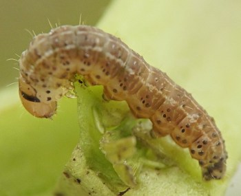
I first detected this insect during the survey via the observation of distorted, wilting lower leaves on shoots of the host in early May. Close examination of these leaves revealed caterpillars tunneling in their petioles. I reared these larvae nearly to maturity, first in the petioles in which they were found, and later, as they grew, in stems of the host.
The larvae apparently belong to the species Hydraecia stramentosa, based on the findings of Winn (1916) and his colleagues, who were the first to elucidate parts of the species' life history, including its root-feeding stage. Winn's published account provides useful details about late-stage larvae in roots, the pupation location, timing of adult emergence, and adult behavior including egg laying. Having mainly observed later instar larvae, Winn was under the impression that this species feeds entirely in roots; the current study's finding of early instar larvae feeding in petioles is evidently new information, assuming these petiole-feeding larvae are indeed H. stramentosa. The claim here that larvae also feed in stems in the wild is based on the assumption that they would tunnel through the stems in order to move from the petioles to the roots, but this has not been directly observed. It would be helpful if the petiole-tunneling larvae could be reared all the way to adulthood to confirm their identity as H. stramentosa.
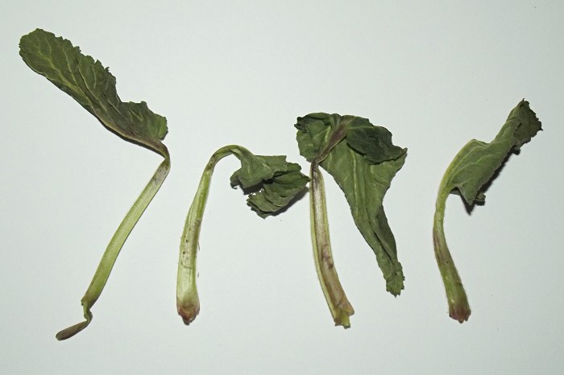
 Prev
Prev
{kind=link}
{kind=link}
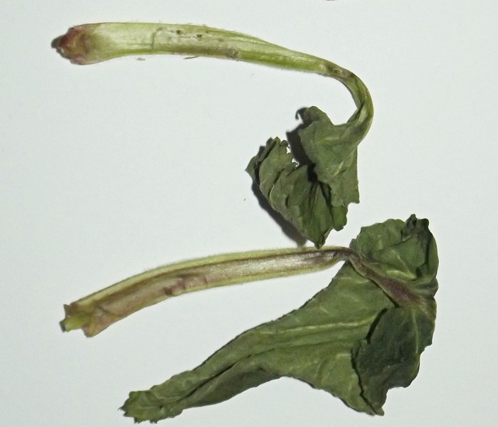
{kind=link}
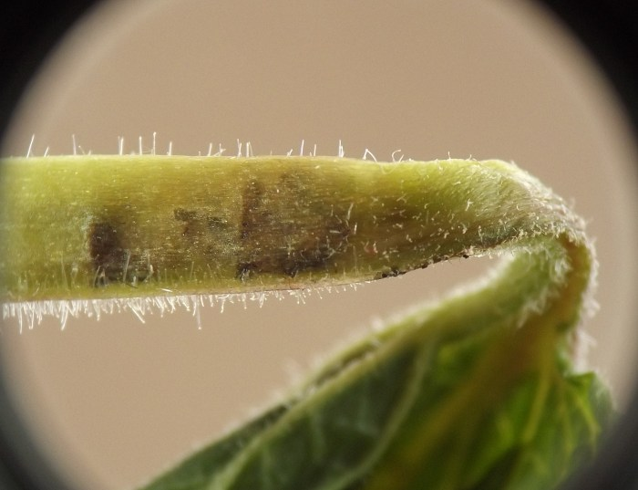
{kind=link}
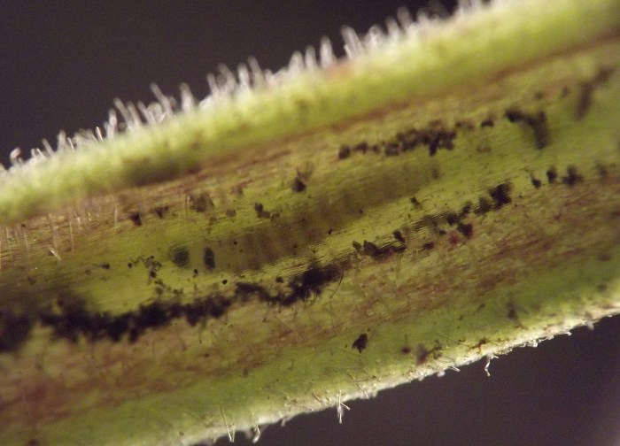
{kind=link}
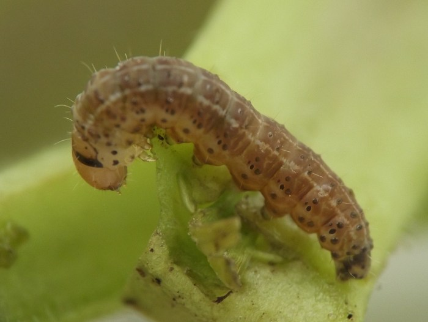
{kind=link}
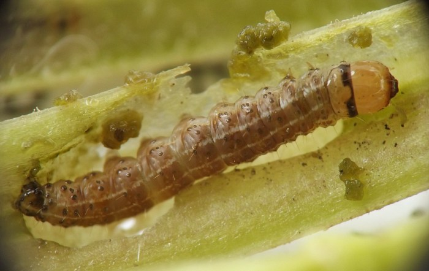
{kind=link}
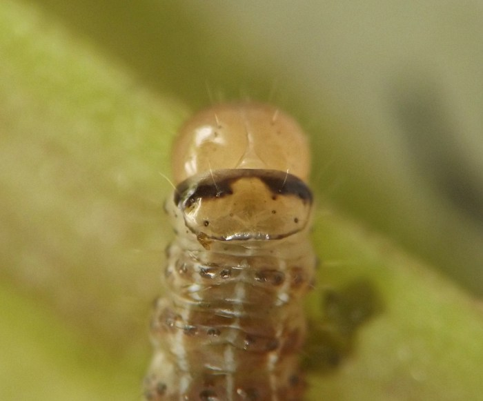
{kind=link}
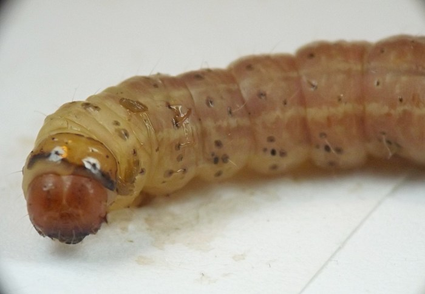
{kind=link}
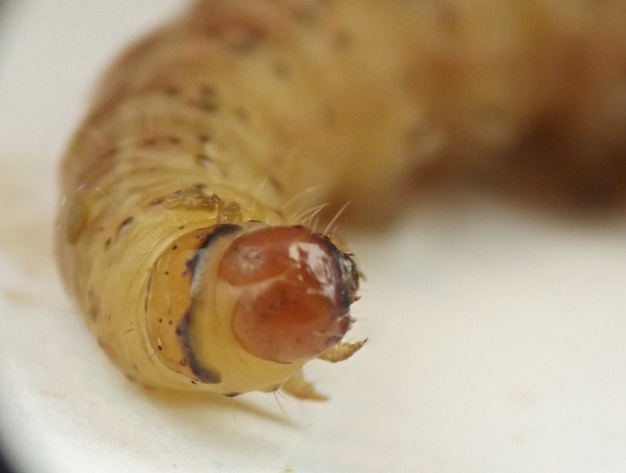
{kind=link}
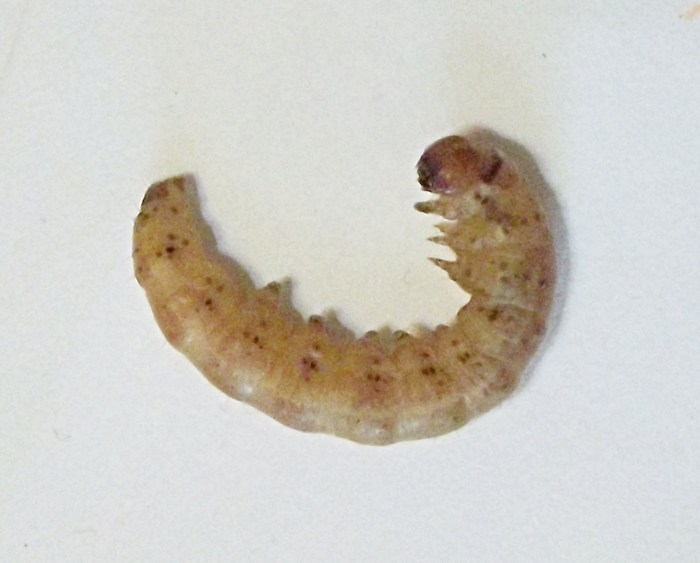
Coll. 05/02/20, photos taken 05/02/20 (01-03), 05/04/20 (04), 05/17/20 (05-07), and 06/08/20 (08-10).
- Winn, A.F. 1916. The home of Gortyna stramentosa. Forty-sixth Annual Report of the Entomological Society of Ontario: pp. 43-48. Retrieved September 16, 2023 from https://www.biodiversitylibrary.org/page/8002018.[return to in-text citation]
Page created: September 16, 2023. Last update: March 20, 2026